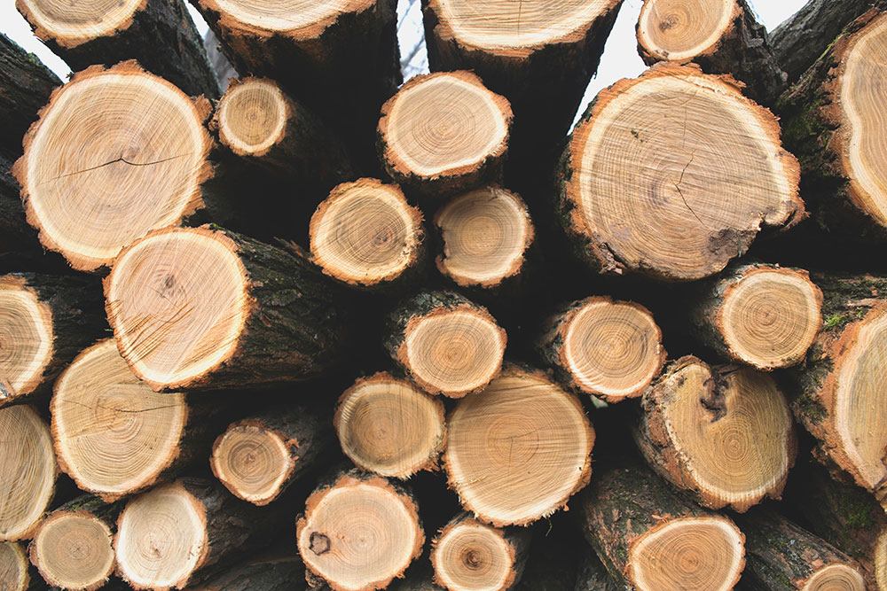

Learn about Wood Working and Wood Turning
Try a new project with step by step instructions.

Common Wood Types
Poplar, Red Oak, White Oak, Walnut, Maple, Alder, Cherry, and Mahogany. Oaks tend to have more open wood grain meaning there will be groves on the surface where the grain is at. Maple and walnut tend to be denser woods so they will be harder to cut and stronger wood types. Poplar is light weight and is easy to dent and also is considered to be a plain and uninteresting type of wood. Alder is sometimes called the poor mans cherry since it is typically less expensive and can look a lot like cherry.
Tools and Supplies
hammers, chisels, sandpaper, table saws, miter saws, jointers, planers, drill press, bandsaws, lathes, radial arm saw, wood glue, pegs, clamps, oils/finishes, and lathe tools.
Cutting and Squaring Lumber
Radial arm saw is used to cut rough boards to smaller pieces that are slightly over sized of what is needed. The jointer is then used to flatten one surface of the board and then ran through the planer to make the two surfaces parallel and bring the board to desired thickness. The board is then used on the jointer to make one side square with the surface and then taking it to the table saw to square the final side or to cut to desired width. Drill presses are used to drill holes into the wood for different reasons.
Finish Shaping
Using a jig with the table saw you can cut one end of the board to make it squared with the surface and side. The miter saw can be used to cut the last end of the board to final length as well as making it parallel. The miter saw can also be used to cut angles into the ends of the board. The table saw with jigs can also do the same work as the miter saw of cutting angles on the ends of the board as well as on the sides of the board. Bandsaws are used to cut different shapes by hand into boards and can help to cut boards into shapes that can be sanded with sandpaper or sanding machines to create final shapes desired. Chisels are used to remove small pieces of wood and can be used to clean up edges such as a cut out and cleaning up the corners of it to make the squared. Hammers are used in many different ways such as tapping the end of the chisels to help cut through the wood or to tap wood into place and many other ways.
Gluing and Finishing
Wood glue is typically water-soluble meaning water will dissolve the glue and is used to glue pieces of wood together for different purposes. Pegs are used to help hold and align pieces of wood being glued together. Clamps are used when gluing to hold the wood together as well as apply pressure to make sure the two surfaces are touching and can glue together. Sandpaper is used to finish shaping as well as to finish sanding to higher grit sandpaper to smooth the wood and remove tool marks. There are a lot of different kinds of oils and finishes that can be used and have their own unique uses.
Wood Turning
Lathes allow wood to be turned in shaped in different ways. Lathe tools are used to cut wood while it is on the lathe and there are several different types that are used to do different things to the wood.